Como Executar o Enviador de Mensagens Únicas (Contact)?
-
Baixe o modelo de Excel
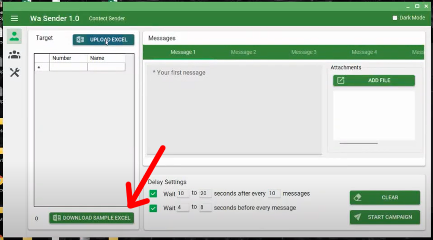 -
Prepare seu Excel com o número de celular alvo (sem o sinal de
+ e com o código do país) e salve-o.
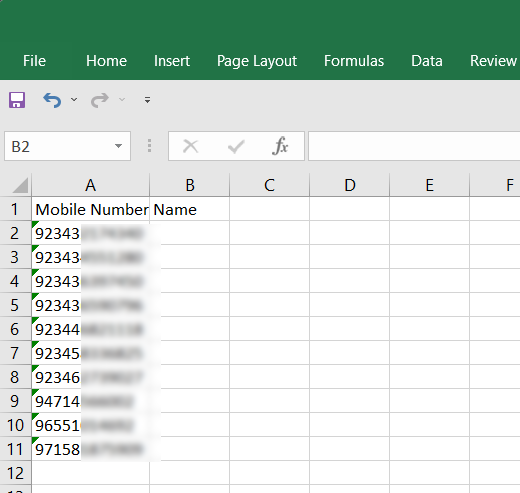 -
Faça o upload do arquivo Excel salvo
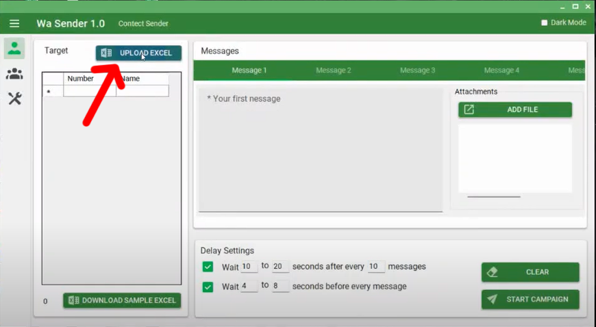 -
Digite sua mensagem aqui e depois clique em INICIAR
CAMPANHA
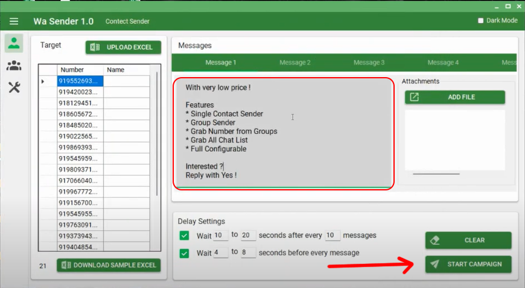 -
Insira qualquer nome para sua CAMPANHA e clique em OK
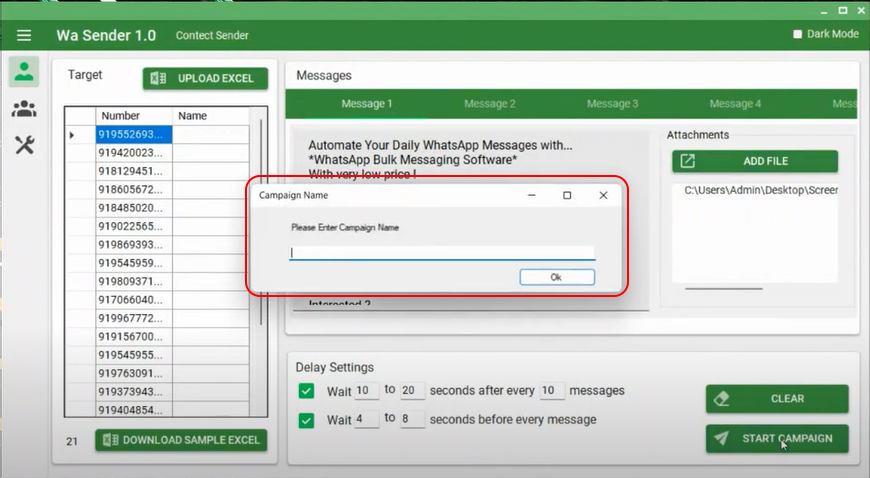 -
Clique no botão 'Clique para iniciar'
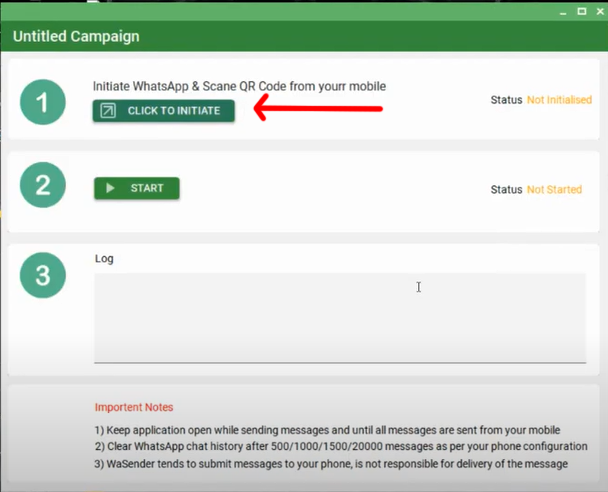 -
O web whatsapp abrirá no navegador Chrome,
Escaneie o código QR do seu telefone celular e espere
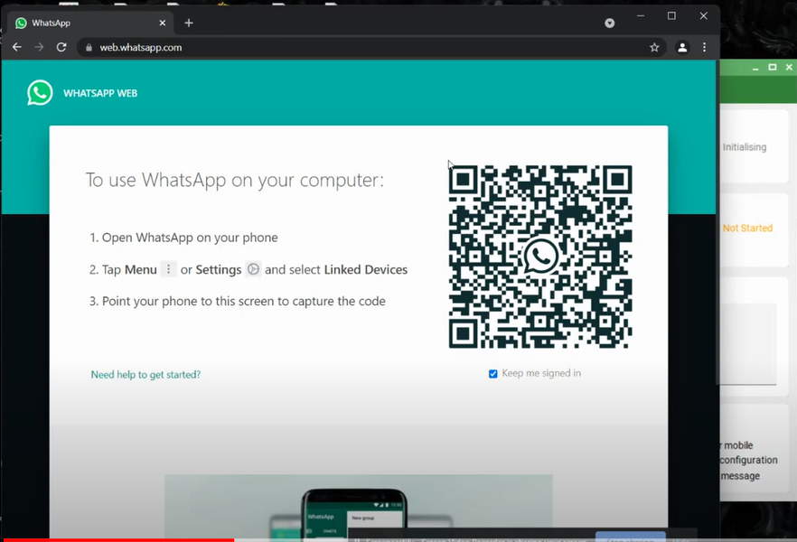 - Uma vez que o status se torne 'Inicializado', Clique no botão 'Iniciar' 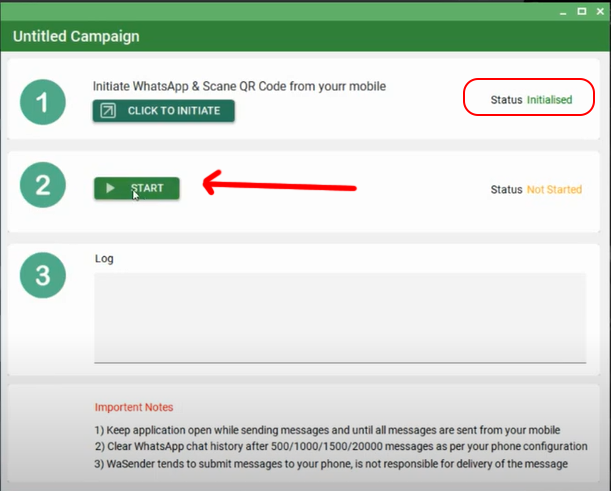
- Agora o status da sua campanha se torna 'Executando' e o WaSender enviará sua mensagem para os números de celular alvo um por um Automaticamente 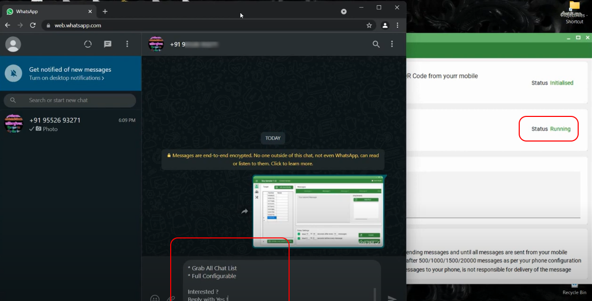
- Você pode rastrear um registro e progresso 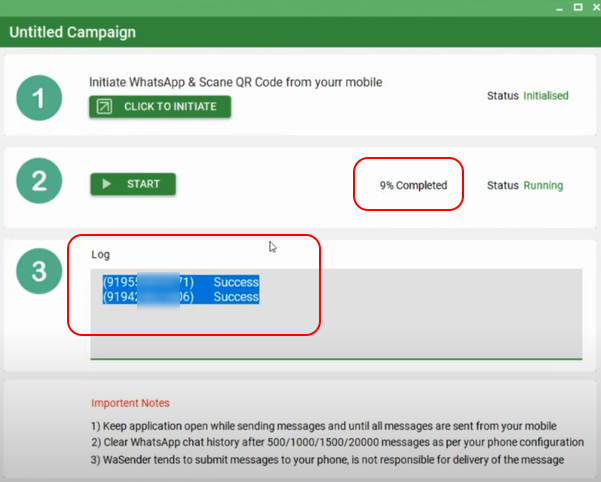
- Após terminar a tarefa, você receberá um Relatório de Status da sua campanha 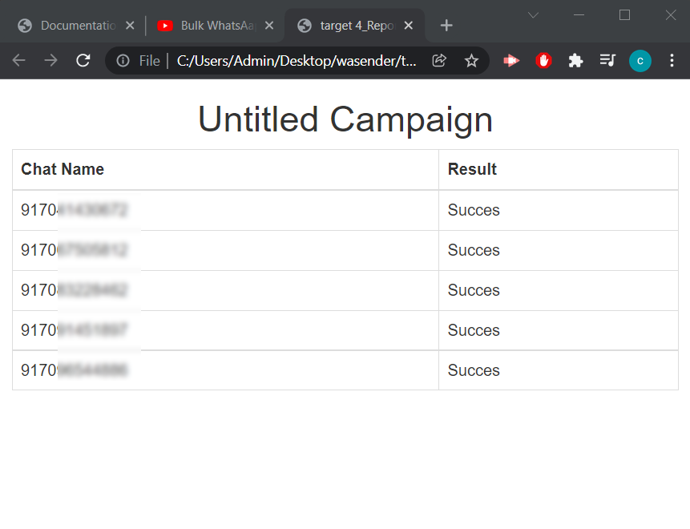
Como Usar a Funcionalidade de Múltiplas Contas
Como Rotacionar Mensagens?
Como usar o aquecedor do WhatsApp?
Como Enviar uma Gravação de Áudio?
Como Usar o Coletor em Massa de E-mails e Números de Celular de Sites?
Como Adicionar KeyMarkers e Aleatório
Keymaker significa grupo ou palavras semelhantes Como, oi, olá, olá, como vai etc. Se você fornecer keymakers, o sistema escolherá aleatoriamente um deles toda vez. Isso faz parte das configurações antiban.
Aleatório significa que o sistema irá gerar automaticamente qualquer número aleatório e incluí-lo em sua mensagem principal para cada contato. Novamente, isso também faz parte das configurações antiban.
Como Adicionar Legenda em uma Imagem/Anexo
-
Primeiro, selecione qualquer arquivo/imagem ou vídeo
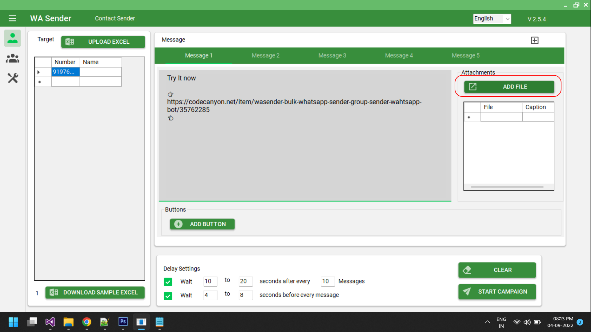 -
Após adicionar o arquivo, selecione um arquivo da lista e
clique com o botão direito do mouse
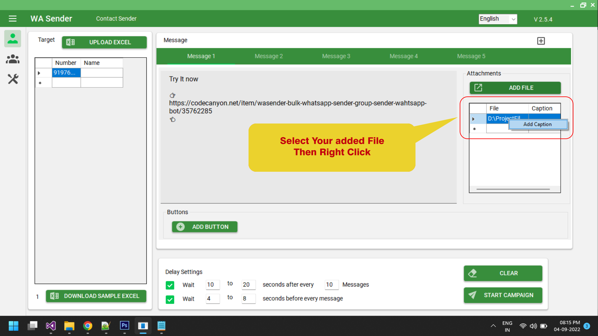 - Clique no botão 'Adicionar Legenda'
-
Uma nova caixa de entrada com várias linhas será aberta
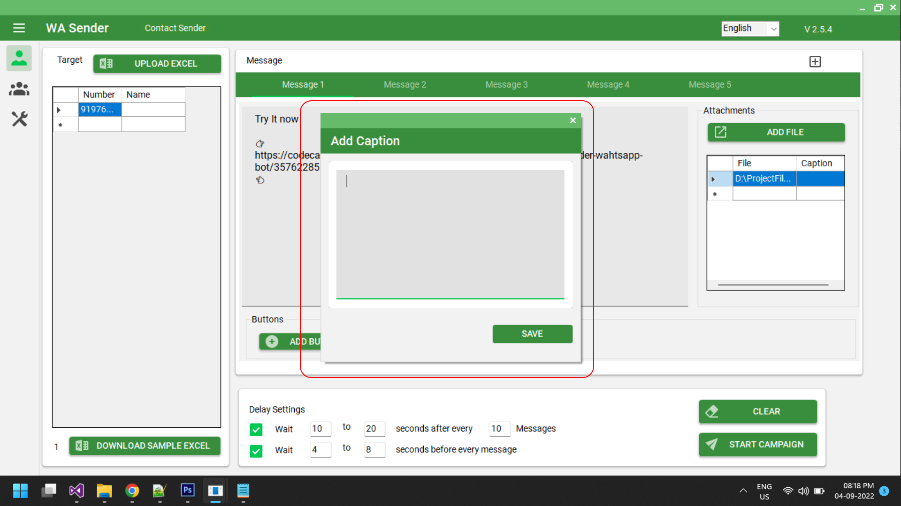 -
Você pode adicionar sua legenda com emojis e símbolos
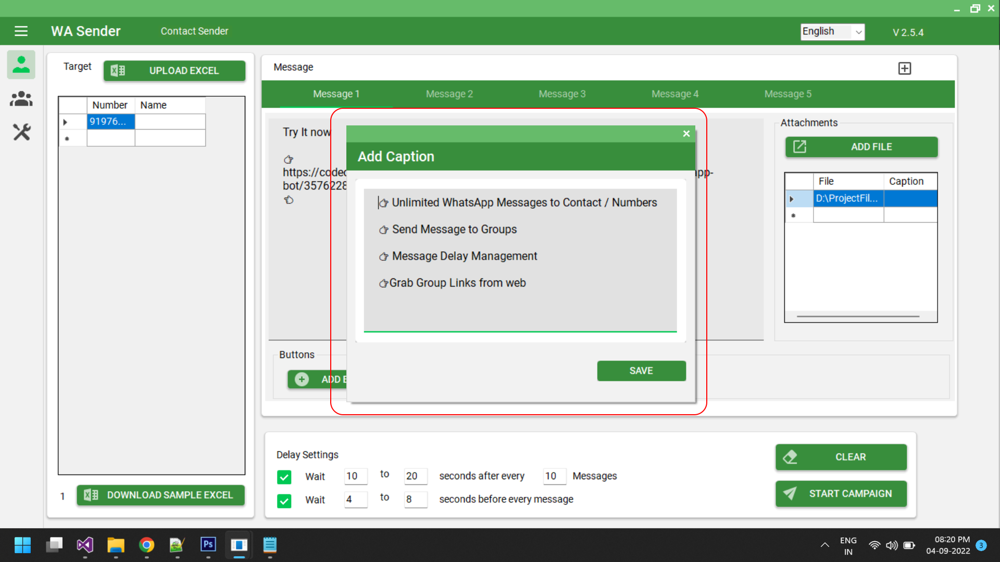 -
Sua legenda aparecerá aqui
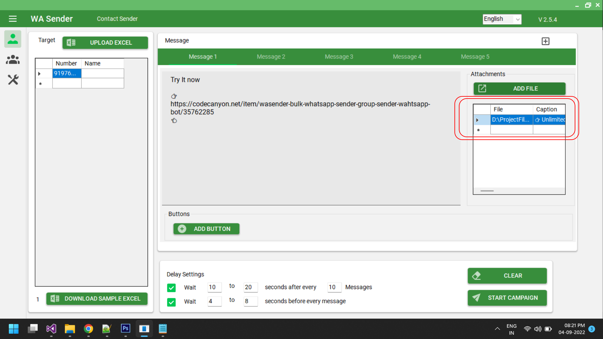 -
Execute a Campanha
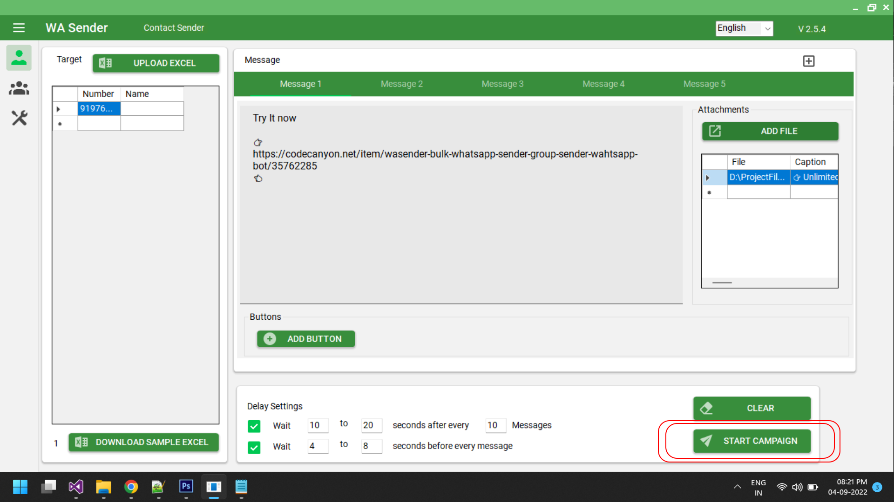 -
Parecerá assim
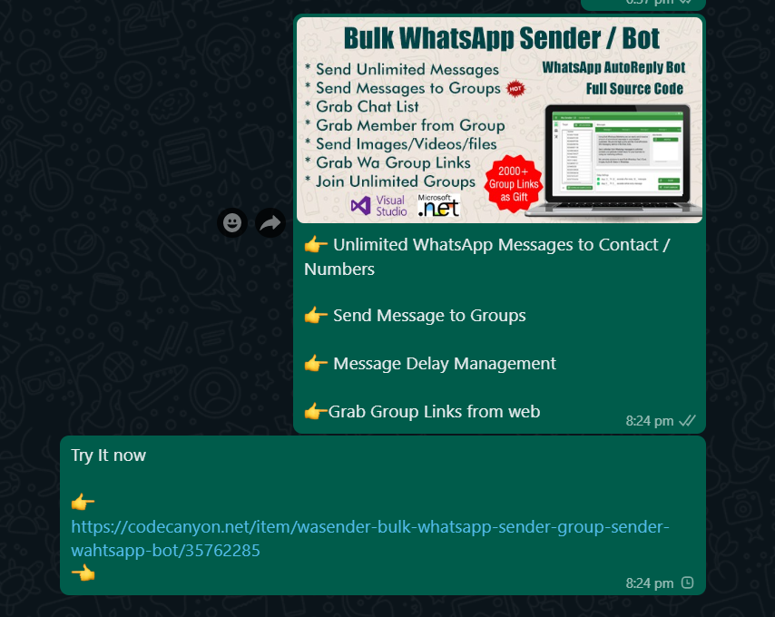
Como Enviar Mensagem para Grupos?
Capturar Links de Grupos do WhatsApp da Web
Bot de Resposta Automática
-
Como configurar o Bot de Resposta Automática
-
Executando o Bot de Resposta Automática
-
Como usar Enquetes no BOT?
Como verificar as atualizações internas do software
Atualizações internas significam, se você estiver enfrentando problemas devido à atualização do Chrome driver e à atualização do web whatsapp. Após comprar este software, você não precisa desinstalar o software e reinstalar uma nova versão deste software.A primeira coisa que você precisa fazer é 'verificar as atualizações internas do software'.
Como resolver o erro do Chrome Driver (Windows 10 e superior)
1) Tente isso2) Se a solução acima não funcionar, tente atualizar o Chrome Driver manualmente
Para Windows 7 e 8, siga o tutorial em vídeo abaixo
Como Enviar 'Mensagem Dinâmica Parametrizada'
- Você pode enviar mensagens dinâmicas e parametrizadas com opções muito fáceis
-
Primeiro, baixe o arquivo de exemplo do Excel do WaSender
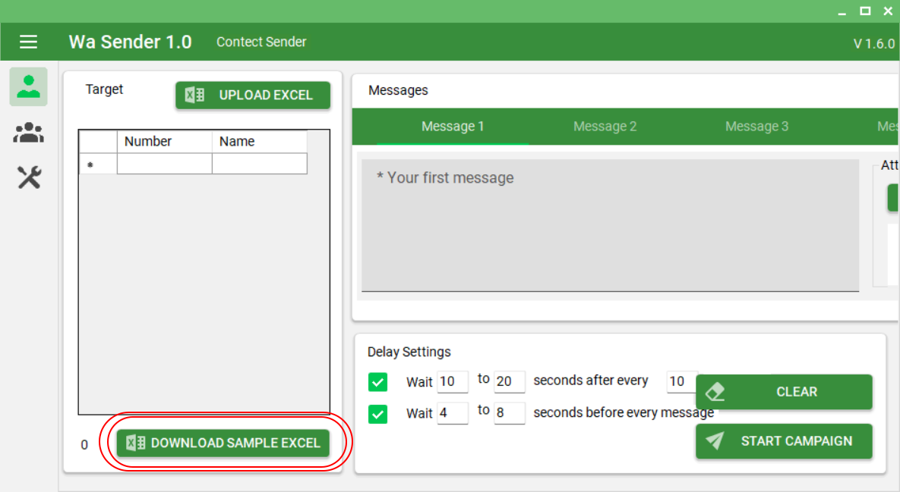 -
Nesta planilha, como normalmente inserimos números de celular,
adicione números de celular com código do país, em seguida,
adicione o nome, se houver,
Agora aqui está o ponto chave, adicione algumas colunas extras conforme necessário para a sua mensagem. O exemplo é mostrado na imagem abaixo
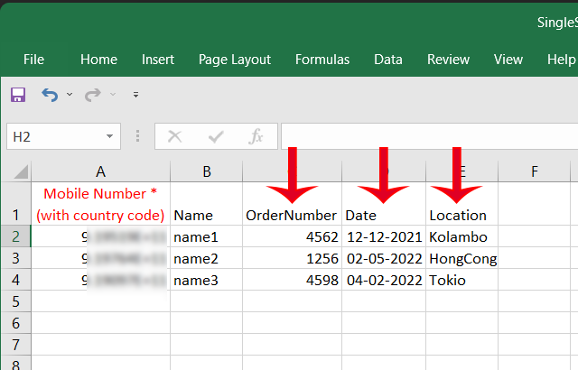 -
Agora salve o arquivo e volte para o WaSender, clique no botão
'UPLOAD EXCEL' e escolha a planilha do Excel recentemente
atualizada. As colunas extras adicionadas serão preenchidas
com valores, de acordo com a planilha do Excel
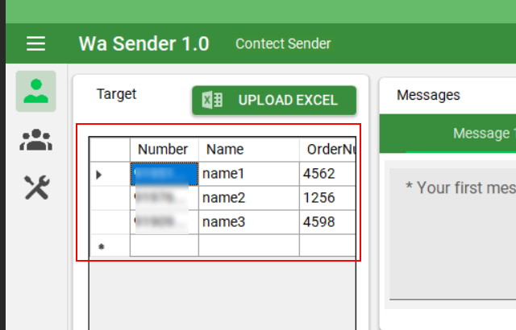 -
Agora no campo de mensagem, você pode usar os cabeçalhos das
colunas com {{}} como parâmetro,
por exemplo, se você quiser usar 'Nome', use {{Nome}} (Sem Espaço / Sensível a Caixa)
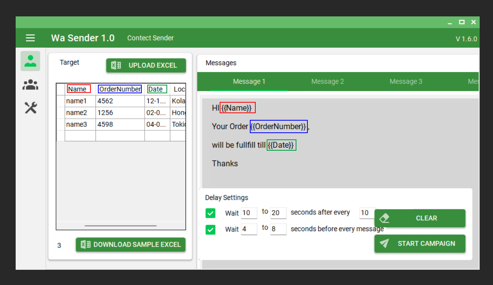
-
Agora execute a campanha normalmente. O resultado será como
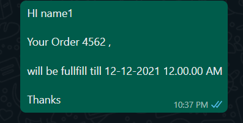
Capturar (Extrair) Lista de Contatos
Enviar Mensagem para Lista de Contatos
Usar Filtro de Números do WhatsApp
Usar Extrator de Perfil de Negócios do WhatsApp
Capturar Membros Ativos de um Grupo do WhatsApp
Como Usar o Extrator de Dados do Google Maps
Como Adicionar Membros a um Grupo
Nota: De acordo com a atualização recente - Antes de adicionar
membros em massa a um grupo, você precisa salvar todos os
contatos na sua lista de contatos Em seguida, atualize sua lista
de contatos no WhatsApp Em seguida, adicione os mesmos membros
ao grupo.
Para isso, você pode usar nosso gerador de CSV de contatos do
Google Importe todos os números neste ferramenta, em seguida,
gere um arquivo CSV Importe esse arquivo CSV na sua conta do
contact.google.com Em seguida, sincronize esses contatos no seu
WhatsApp do dispositivo Uma vez que todos os números forem
adicionados aos seus contatos, então Importe os mesmos números
na ferramenta de adição de membros do grupo Nota: a adição de
membros ao grupo é arriscada de usar, use esta ferramenta apenas
se você não se importar com o banimento
Como Usar o Localizador de Grupos
Como Usar o Gerador de Grupos
Como Usar 'Obter Resultados da Enquete'
Tente enviar mensagens com Enquetes e obter resultados do mesmo
sistema e do mesmo navegador.
Este recurso funcionará de forma eficiente se você enviar
mensagens com enquetes usando o mesmo software de envio em massa
(WaSender) com o mesmo perfil/navegador e o mesmo sistema. Se
você enviar mensagem de outro sistema ou navegador e tentar
obter os resultados da enquete de outro sistema/navegador, o
resultado pode ser algo diferente, porque no navegador da web
nem todos os bate-papos são carregados, então nem todas as
respostas da enquete pelos usuários podem ser obtidas.
Além disso, o resultado pode ser inesperado se as mensagens da
enquete forem muito antigas.
Como Usar 'Extrator de Dados de Mídias Sociais'
Por favor, Note: Ao capturar dados, o Google pode solicitar um CAPTCHA. Quando isso acontecer, o sistema irá informar você com dois sons de bip. Você precisa resolver o CAPTCHA e, em seguida, o sistema continuará com a captura de dados.
Dicas Úteis
-
P: Quantas mensagens com uma imagem podem ser enviadas por minuto?
Resposta: Isso depende de quantos contatos você está segmentando. É aconselhável aumentar a configuração de atraso conforme a vastidão de seus contatos. As configurações padrão de atraso atuais são suficientes para quase 200 contatos. Ele utiliza um atraso aleatório da configuração que você fornece. Você pode dizer que se estiver segmentando 200 contatos, ele pode enviar de 5 a 10 mensagens por minuto.
-
P: Quantas mensagens do WhatsApp posso enviar por dia? Meu número será bloqueado se eu enviar muitas mensagens do WhatsApp?
Resposta: O número de mensagens que você pode enviar depende de quão antiga é sua conta do WhatsApp. Se você tem um número novo, comece enviando um número pequeno de mensagens, como 50 por dia. Aumente gradualmente em torno de 5-10% por dia e, dentro de um mês, você pode chegar a até 3000-4000 mensagens. O WhatsApp banirá seu número se você enviar muitas mensagens de spam. Isso acontece se um grande número de pessoas o denunciar como spam. Portanto, sempre garanta que você não envie spam, especialmente de um número novo.
-
P: O que são configurações Anti-Bloqueio?
Resposta: O WaSender possui uma lista de configurações que podem ajudar a enviar um grande número de mensagens sem que sua conta seja bloqueada.
1: Com o WaSender, você pode enviar várias variantes de mensagens de uma só vez. Por exemplo, se estiver enviando mensagens para mais de 1000 números, você pode criar cerca de 5 variantes diferentes de mensagens para que suas mensagens permaneçam diferentes.
2: O WaSender permite que você importe arquivos com variáveis que podem ajudá-lo a distinguir ainda mais cada uma de suas mensagens. Por exemplo, você pode importar um arquivo com um nome e número e usar o nome para tornar cada mensagem única.
3: Fornecemos configurações como o tempo entre as mensagens e outras configurações avançadas que evitam que sua conta seja bloqueada. -
Dicas Anti-Bloqueio
1) Sugerimos não usar sua conta pessoal principal (você pode usar um novo número de conta)
2) Apenas tente usar sua nova conta por alguns dias enviando e recebendo e depois de enviar em massa a partir dela
3) Envie o número da conta (que você deseja usar para enviar em massa) como um cartão de visita do seu conta pessoal para amigos e familiares e peça para salvá-lo e enviar uma mensagem para você nele
4) Quando você começar a enviar em massa a partir da nova conta, comece com pequenos lotes
5) Junte-se a grupos do WhatsApp abertos e faça algumas conversas lá
6) Tente escrever mensagens de forma que o destinatário não as denuncie como spam (esse é o problema mais crítico com contas novas)
7) Tente usar opções de Mensagem Múltipla e/ou Spintax no aplicativo, que permitem que você escreva a mesma mensagem de maneira diferente
8) Adicione seus números e os números de seus amigos com os quais você costuma conversar e defina iniciar o diálogo com eles após x quantidade de mensagens
9) Dê mais credibilidade à sua conta participando de grupos
10) Não envie mais do que 600 mensagens por hora. O Bulk Whatsapp Sender possui uma opção de limite única onde você pode dizer ao Bulk Whatsapp Sender quando parar de enviar mensagens.
11) Envie mensagens apenas para usuários opt-in
12) Use aleatórios e marcadores de chaves
13) Tente usar números virtuais para envio em massa (sms-man.com)
14) Se sua conta for banida
Vá para
C:\programdata\wasender
E exclua a pasta chromeprofile
Sempre